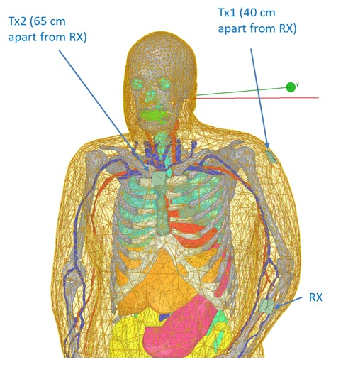
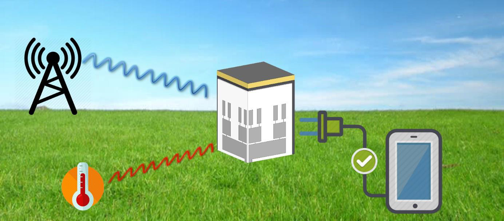
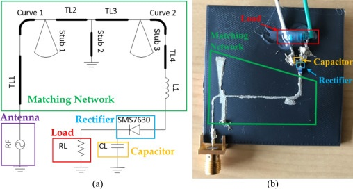

Biography
Thang Q. Nguyen received the BE degree in telecommunication engineering from Ho Chi Minh University of Technology (HCMUT), Ho Chi Minh City, Vietnam in 2017. He joined the Sensors Lab at KAUST, Saudi Arabia as a visiting student in summer 2017 where he conducted research on multi‐band RF energy harvesting systems. He is currently a PhD student at KAUST. His research focus on RF energy harvesting systems and Wireless sensor systems.
Education
MSc in Electrical Engineering
King Abdullah University of Science and Technology (KAUST), Saudi Arabia, 2019
B.E in Electronics and Telecommunications
Ho Chi Minh city University of technology (HCMUT), Vietnam, 2017
Award
e-Silicon SUN FLOWER AWARD for talented students, 2016
Recent Projects

Human Body Communication
Human Body Communication (HBC) using the human body as the channel for communication. In this project, with the help of HFSS simulation software, we investigate serveral aspects regarding the communication platform such as electrode (size, shape, material), modulation technique (QPSK, BPSK, ASK), coupling technique (capacitive, galvanic) .

Multi-source energy harvesting
Billions of wireless sensing devices must be powered for IoT applications. Collecting energy from the ambient environment to power sensor nodes is a promising solution. Solar energy has been one of the main sources of ambient energy due to its availability, higher power density, and the maturity of the solar photovoltaic industry.
However, there are many scenarios (indoor environment, outdoor environment during nighttime, poor weather conditions, underground, etc) where ambient solar energy is either not available or not sufficient for practical applications. For such scenarios, other renewable sources of energy must be sought. In this project, we employed the thermal and RF energy

Triple band rectifier for RF energy harvesting
RF energy from the ambient environment can be harvested and converted to DC energy that can power electronic devices. However, the spectrum of RF energy is very board and single frequency is not enough to power the device. The challenging is that designing the board band rectifier is imposible due to non-linear behavior of the diode.
Therefore, in this project, we desinged a triple band rectifier that can harvest energy from 3 different band (GSM 900, GSM 1800, 3G 2100 MHz) simultaneously.
Publications
The results of recent projects are published in the following papers
Fully printed 3D cube-shaped multiband fractal rectenna for ambient RF energy harvesting
AzamatBakytbekov, Thang Q.Nguyen, CuongHuynh, Khaled N.Salama, AtifShamim
Multi‐source ambient energy harvester based on RF and thermal energy: Design, testing, and IoT application
Azamat Bakytbekov, Thang Q. Nguyen, Weiwei Li, Anton Lee Cottrill, Ge Zhang, Michael S. Strano, Khaled N. Salama, Atif Shamim
Contact information
Thank you for visting my website!!!
Should you have any concern, please contact me via following measures.
-
Address
H4200A-202
4700 King Abdullah University of Science and Technology, Thuwal 23955-6900
Kingdom of Saudi Arabia
-
Phone
966-563262549
-
Email
quangthang.nguyen@kaust.edu.sa
https://scholar.google.com/citations?user=4snlyogAAAAJ&hl=en&oi=ao
{kind=link}
{kind=link}
{kind=link}